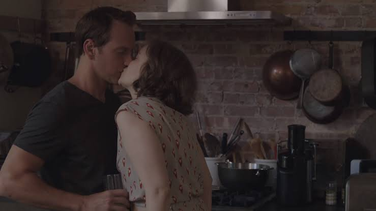

¿De qué trata?
Creada y protagonizada por Lena Dunham, Girls sigue la vida de Hannah Horvath y su grupo de amigas veinteañeras en Brooklyn, Nueva York. A diferencia de otras producciones glamorosas, esta serie de HBO destaca por su honestidad brutal, retratando los tropiezos financieros, las crisis existenciales y las relaciones complejas de una generación sin filtros.
Mi Episodio Favorito: "One Man's Trash"
Este es un aclamado episodio botella (Temporada 2, Episodio 5) donde la narrativa principal se detiene para encapsular a Hannah en la casa de un médico maduro (Patrick Wilson). Durante unos días idílicos, aislados del caos exterior, el capítulo explora las fantasías de estabilidad y los deseos ocultos de la protagonista.

Lo que vuelve único a este episodio es su impecable cinematografía íntima y la sutileza con la que aborda las complejas dinámicas de poder, validación y vulnerabilidad en las relaciones humanas.